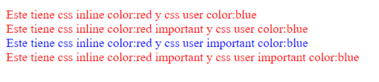

| User important styles sheets |
| Author important style sheets |
| Author normal style sheet |
| User normal style sheets |
| User agent style sheets |
La que menos importa es la User Agent que es una hoja de estilo básica que el navegador tiene y que le da un estilo predeterminado a cualquier cumento
Author es la hoja de estilo que crea el desarrollador, ya sea embebido o fichero externo
User, es estilo que el propio usuario o lector puede dar a la página gracias al navegador. En Edge no se puede porque no soporta esta característica. Pero en En el navegador Firefox se pueden definir las regla estilo de usuario en un archivo llamado "userContent.css" que se encuentra en la carpeta "Firefox", del perfil de usuario que estemos utilizando. En el caso del Chrome instalando el plugin Stylish. Para ello he creado un estilo con como indico abajo
Ejemplo con foto porque el estilo de usuairo está en mi ordenador:
Para author y user
Ejemplo de código ejecutado en cada ordenador
Para el author, diferencias entre estilo inline o externo, con y sin importrant
Entre css inline y css externo
Entre css inline y css externo important
Entre css inline important y css externo important